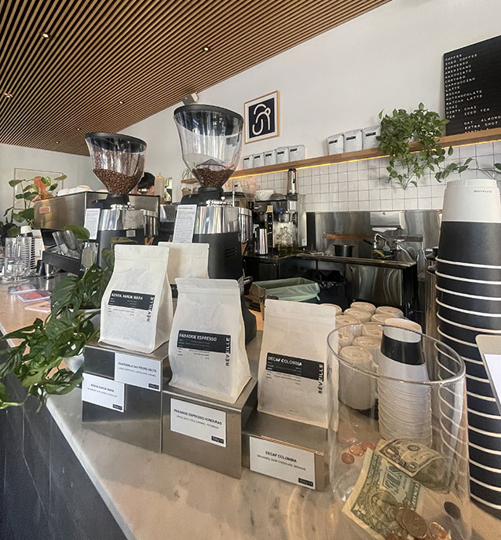
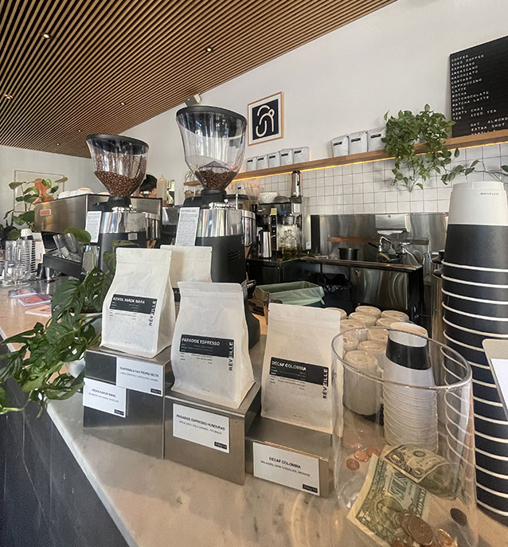

Cafe Reveille, nestled in the heart of Hayes Valley in San Francisco, is a quaint and charming spot that exudes good vibes from the moment you step through its doors. The ambiance is serene, with a semi-quiet environment and peaceful, non-distracting music setting the perfect backdrop for a study session or a casual catch-up with friends. One of the standout features of Cafe Reveille is its extended operating hours, staying open from 7 AM until 7:30 PM, which is a rarity in a city known for its early closing times. This makes it an ideal spot for those looking to squeeze in some extra study time after a school day or a lond day of work. I spent my Sunday at this coffee shop around 3 to 5 PM which seemed to be the prime hours in which everyone wanted to study. I would have loved to stay longer but my computer died.
Because of its popularity, it is quite busy so you may have to do some waiting or have a little luck to find a table. It's also worth noting that Cafe Reveille falls short in terms of practical amenities for students or remote workers. The absence of power sockets means you'll need to make sure your devices are fully charged before settling in for a study session. Additionally, the lack of consistent WiFi can be a downside for those relying on a reliable internet connection. When it comes to refreshments, Cafe Reveille offers a selection of good drinks. The drinks are generally tasty and the pricing can be considered average based on the general economic conditions of San Francisco. With that said, the snacks are delicious, but a more fufilling meal can also be more pricey as they range from $14.00 to $18.50. While studying, I purchased a matcha latte with oat milk for $6.00 and some golden potatoes for $4.00. My roommate also purchased a chai latte for $5.50. The drink was made out of genuine matcha which suprisely is uncommon in lots of other coffee shops, but the potatoes were very enjoyable and a great snack.
In summary, Cafe Reveille earned mixed reviews. I rates it a 6.5 out of 10, citing the lack of power sockets and inconsistent WiFi as significant drawbacks. However, my roommate, Alyssa is slightly more generous with her rating of 7 out of 10, appreciating the modern aesthetic and charming ambiance. Overall, while Cafe Reveille may not be perfect, it's still worth a visit for its peaceful atmosphere and cute surroundings.